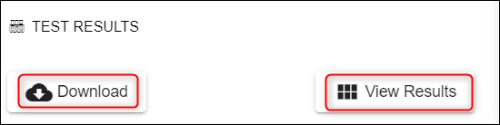
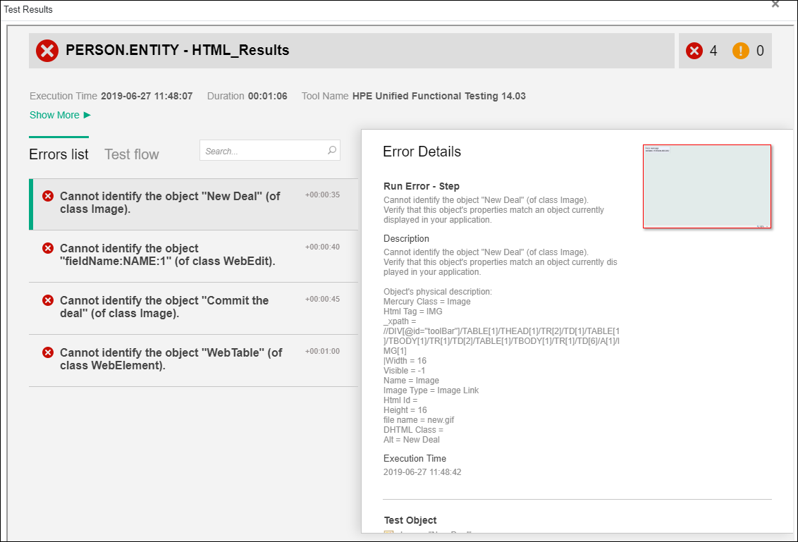

Triage Workflow - Check Errors when Test Fails
In case the factory test fails, see below how to check the errors.
See an example of what are the messages displayed on the screen after the factory run (process) has been completed, but the tests failed:

View Event History - You can see the phases during the factory run including the failed test run.
On the timeline you will see:
- the process completed
- a red warning message "RESULTS - FAILED" with the test location in your artifactory.
Check Test Results

By clicking the Download button, you can have locally a zip file which contains an index.html file having the same information as View Results. View results displays an HTML report with the list of all errors encountered during the test run.

Check Application Logs

By clicking the Download button, you can have locally a zip file which contains the following folders:
- jboss
- t24home
- TAFJ
Note
Into t24home you can find T24.log referring to the T24 BrowserWeb processes, where you can identify the exact errors during the test run.
Also please check this user guide in order to see how you can access the UD directories.